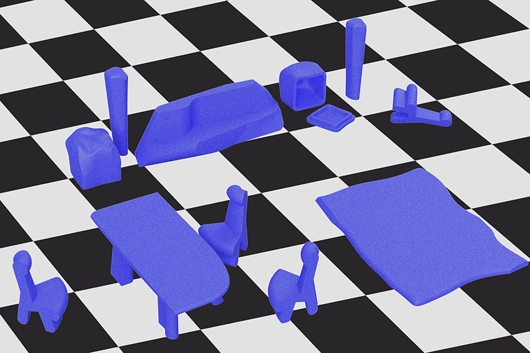

KAIR 2030
2017 (work in progress, thesis exhibition opening on May 8 2017 at 2 W 13th St)
KAIR 2030 is a multimedia interactive installation with monologues from future emulation workers in the year of 2030. Through an uncanny narrative of a recreational resort for Artificial Intelligence designed by human experts, KAIR 2030 speculates on new types of relationships between human and Artificial Intelligence, if we can lift the anthropocentric expectations for A.I. - imposing human characteristics and measuring their capacities based on human knowledge.
AI has often been portrayed as pets, companions, our simulated selves, and other types of services for human, particularly in popular culture. Stepping aside from the fever of AI in recent years, Benjamin Bratton stated in his article - “the real philosophical lessons of A.I. will have less to do with humans teaching machines how to think than with machines teaching humans a fuller and truer range of what thinking can be.”
